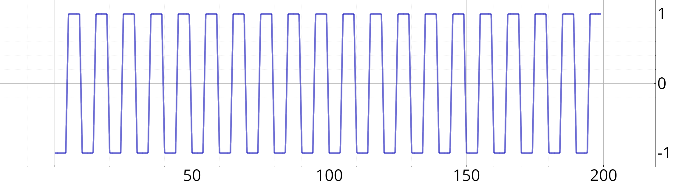

libtsd
0.1
C++ signal processing library
Main Page
Modules
Installation
Licence
◆
sigsquare()
static Vecf dsp::sigsquare
(
int
p
,
int
n
)
inline
static
Square, periodic signal
Parameters
p
Period, in number of samples.
n
Number of points to generate.
Example
// Demi-période = 10, 200 échantillons
soit x = sigcar(10, 200);
Figure f;
f.plot(x);

See also
sigtri()
,
sigsin()
,
sigcos()
,
sigexp()
dsp
Generated on Tue May 2 2023 10:30:19 for libtsd by
1.9.1